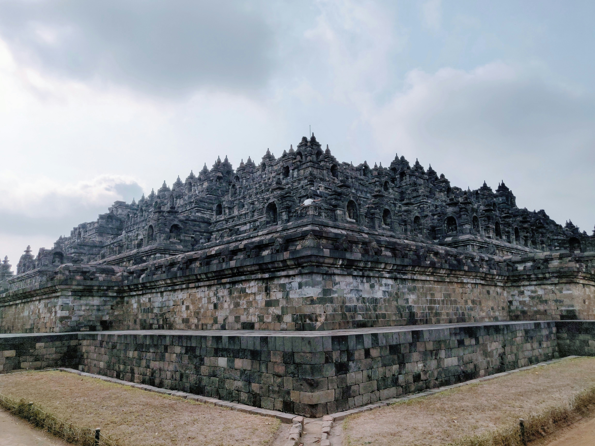
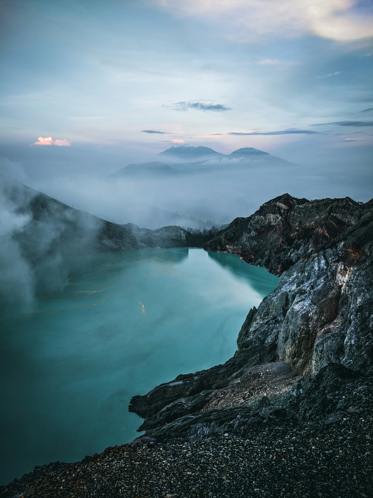
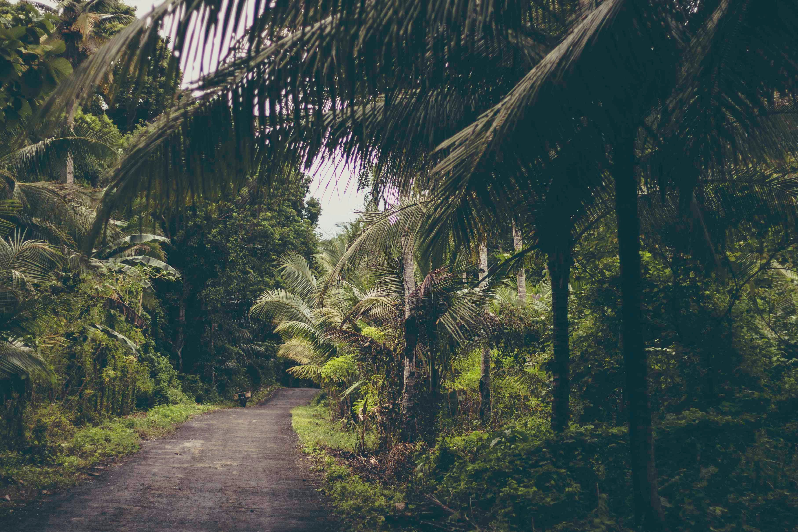
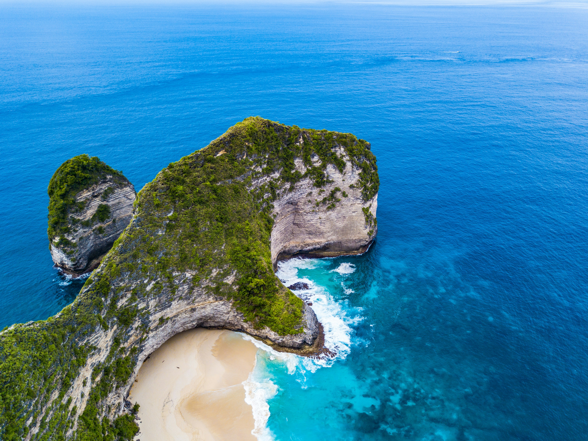
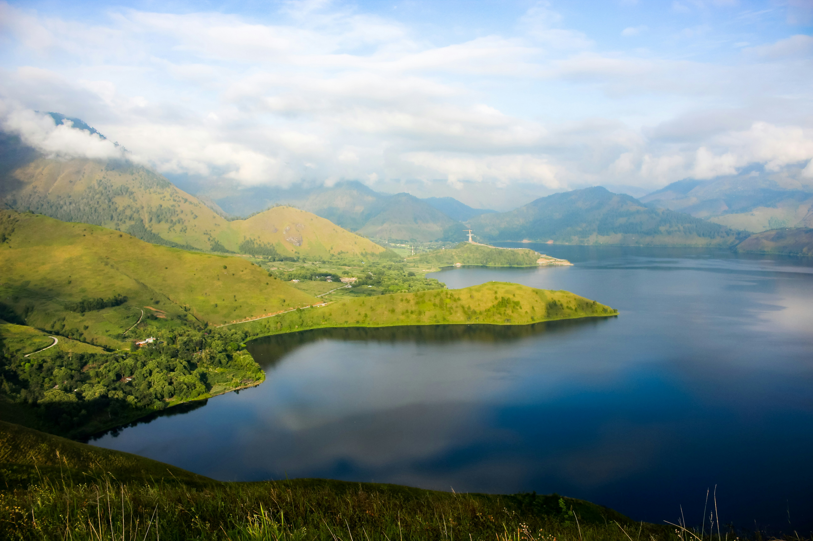

Explore Indonesia
Discover the best destinations across Indonesia.

LABUAN BAJO
East Nusa Tenggara
Labuan Bajo is a picturesque coastal town in Flores, Indonesia, and the gateway to the famous Komodo National Park. Known for its iconic Komodo dragons, dramatic viewpoints on Padar Island, vibrant diving spots, and stunning pink beaches, it is the ultimate paradise for island hoppers and adventurers.

Borobudur temple
Central Java
Borobudur Temple is a 9th-century UNESCO World Heritage Site in Central Java, Indonesia, and the world's largest Buddhist monument. Famous for its intricate relief panels, bell-shaped stupas, and breathtaking sunrise views, Borobudur is an unmissable destination for history and culture enthusiasts.

Komodo Island
East Nusa Tenggara
Komodo Island, part of the UNESCO World Heritage Site in East Nusa Tenggara, is world-famous as the natural habitat of the prehistoric Komodo dragon. Featuring dramatic rugged hills, crystal-clear waters, and unique pink sand beaches, it offers an unforgettable adventure into wild, untamed nature.

Mount Ijen
East Java
Mount Ijen is an active volcano in East Java famous for its world-renowned electric-blue flames and the world's largest acidic crater lake. Renowned for night trekking and traditional sulfur mining, it offers a surreal, otherworldly landscape unlike anywhere else on Earth.

Wakatobi
Southeast Sulawesi
Wakatobi National Park in Southeast Sulawesi is a world-class marine paradise boasting pristine coral reefs, incredible biodiversity, and crystal-clear waters. Renowned globally for diving and snorkeling, it is home to over 750 coral species and rich sea life.

Nusa Penida
Bali
Nusa Penida is a breathtaking island southeast of Bali, famous for its dramatic coastal cliffs, pristine beaches, and vibrant marine life. Home to iconic spots like Kelingking Beach, Broken Beach, and Angel's Billabong, it is a must-visit paradise for adventure seekers and photography enthusiasts.

Lake Toba
North Sumatra
Lake Toba is the world's largest volcanic lake and one of Indonesia's most breathtaking natural wonders, located in North Sumatra. Formed by a massive supervolcanic eruption, it features the charming Samosir Island at its center, rich Batak culture, and serene mountain landscapes.

Uluwatu
Bali
Uluwatu is an iconic coastal region in Bali, famous for its majestic cliffside temple perched high above the Indian Ocean. Renowned for spectacular sunset views, traditional Kecak fire dances, and world-class surfing waves, it is a quintessential destination for culture and ocean lovers.